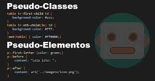

O que é um Pseudo-elemento?
Um pseudo-elemento CSS é uma palavra-chave adicionada a um seletor que permite que você estilize uma parte específica do elemento selecionado. Por exemplo,o pseudo-elemento ::first-line aplica o estilo apenas na primeira linha de um parágrafo.
O que quer dizer a palavra pseudo? Exprime a noção de falso, enganador (ex.: pseudofruto). Nota: É seguido de hífen quando o segundo elemento começa por vogal, h, r ou s (ex.: pseudo-arcaísmo, pseudo-etimológico, pseudo-intelectual, pseudo-ortorrômbico, pseudo-herança, pseudo-revelação, pseudo-sábio) .
Qual a função do pseudo-elemento :: selection? O pseudo-elemento ::selection é utilizado para selecionar o conteúdo de um elemento e, a partir disso, customizar algumas propriedades dessa área, como a cor de fundo e do texto. ... Entre essas propriedades podemos destacar: color, background-color, cursor e text-decoration.